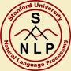

|
|
|
The Stanford Natural Language Processing Group |
|
home
|
|  |
|
NLP Reading Group Schedule — Winter 2006-2007
If you have questions or want to get on the mailing list, please contact Jenny Finkel at jrfinkel@stanford.edu.
|
| Date | Moderator | Topic / Paper |
|---|---|---|
| Jan. 24 | Jenny Finkel | Organizational Meeting |
| Jan. 31 | Jenny Finkel | John Blitzer, Ryan McDonald, and Fernando Pereira. Domain Adaptation with Structural Correspondence Learning. EMNLP 2006. [pdf] |
| Feb. 7 | Pi-Chuan | David Chiang. A Hierarchical Phrase-Based Model for Statistical Machine Translation. ACl 2005. [pdf] |
| Feb. 14 | Dan Cer | P Liang, A Bouchard-Cote, D Klein, B Taskar. An End-to-End Discriminative Approach to Machine Translation. ACL 2006. [pdf. |
| Feb. 21 | Sharon | Ellison, M. and Kirby, S. Measuring Language Divergence by Intra-lexical Comparison. ACL 2006. [pdf] |
| Feb. 28 | Chris | Slav Petrov, Leon Barrett, Romain Thibaux and Dan Klein. Learning Accurate, Compact, and Interpretable Tree Annotation. ACL 2006. [pdf] |
| March 7 | Bill | S Harabagiu, A Hickl. Methods for Using Textual Entailment in Open-Domain Question Answering. ACL 2006. [pdf] |
| March 14 | Alex | NN Schraudolph. Local Gain Adaptation in Stochastic Gradient Descent. Artificial Neural Nets 1999. [pdf] |
| March 21 | Dan R. | E Gabrilovich, S Markovitch, Text Categorization with Many Redundant Features: Using Aggressive Feature Selection to Make SVMs Competitive with C4.5. ICML 2004 [pdf] |
NLP Reading Group Schedule — Autumn 2006
If you have questions or want to get on the mailing list, please contact Jenny Finkel at jrfinkel@stanford.edu.
|
| Date | Moderator | Topic / Paper |
|---|---|---|
| Sept. 25 | Jenny Finkel | Organizational Meeting |
| Oct. 2 | William Morgan | David J. Hand.
Classifier Technology and the Illusion of Progress.
Statistical Science, 2006.
[pdf]
Leo Breiman. Statistical Modeling: The Two Cultures. Statistical Science, 2001. [pdf] |
| Oct. 9 | Surabhi | Hal Daume III and Daniel Marcu. Bayseian Query-Focused Summarization. ACL 2006. [pdf] |
| Oct. 16 | Dan Ramage | Mochihashi and Matsumoto. Context as Filtering. NIPS 2005. [pdf] |
| Oct. 23 | Jenny | Aria Haghighi and Dan Klein. Prototype-driven Learning for Sequence Models. NAACL 2006. [pdf] |
| Oct. 30 | Sebastian | Ioannis Tsochantaridis, et al. Support Vector Machine Learning for Interdependent and Structured Output Spaces. ICML 2004. [pdf] |
| Nov. 6 | Dan Cer | Vishwanathan et al. Accelerated training of CRFs with stochastic gradient methods. ICML 2006. [pdf] |
| Nov. 13 | Jeff | Li and Yang. Loss function analysis for classification methods in text categorization. ICML 2003. [pdf] |
| Nov. 27 | Teg | Galen Andrew. Hybrid Markov/Semi-Markov Conditional Random Field for Sequence Segmentation. EMNLP 2006. [pdf] |
| Dec. 4 | Dan Cer | Hal Daume III and Daniel Marcu. Learning as Search Optimization. ICML 2005. [pdf] |
| Dec. 11 | John Hale | Eric Villemonte de la Clergerie. Parsing Mildly Context Sensitive Languages with Thread Automata. Coling 2002. [pdf] |
| Date | Moderator | Topic / Paper |
|---|---|---|
| Jan. 23 | Jenny Finkel | Organizational Meeting |
| Jan. 30 | William Morgan | Franz Josef Och. Minimum Error Rate Training for Statistical Machine Translation ACL 2003. [pdf] |
| Feb. 6 | Dan Ramage | M. Narasimhan, N. Jojic, and J. Bilmes. Q-Clustering NIPS 2005. [pdf] |
| Feb. 13 | Chris Manning | S. Reynolds and J. Bilmes. Part-of-Speech Tagging with Virtual Evidence and Negative Training HLT 2005. [pdf] |
| Feb. 20 | Rajat Raina | Structured Prediction Via the Extragradient Method/M3NS |
| Feb. 27 | -- | NO MEETING - Good Luck with ACL submissions! |
| Mar. 6 | Bill MacCartney | Rodrigo de Salvo Braz, Eyal Amir, and Dan Roth Lifted First-Order Probabilistic Inference IJCAI 2005 [pdf] |
| Mar. 13 | Teg Grenager | S. Goldwater, T. Griffiths, and M. Johnson Interpolating Between Types and Tokens by Estimating Power-Law Generators NIPS 2005 [pdf] |
| Mar. 20 | Jenny Finkel | Latent Head Models For Parsing |
| Date | Moderator | Topic / Paper |
|---|---|---|
| Oct. 3 | Jenny Finkel | Organizational Meeting |
| Oct. 10 | Teg | Andrew McCallum, Kedar Bellare and Fernando Pereira. A Conditional Random Field for Discriminatively-trained Finite-state String Edit Distance. Conference on Uncertainty in AI (UAI), 2005. [pdf] |
| Oct. 17 | Pi-Chuan | Noah A. Smith and Jason Eisner. Contrastive Estimation: Training Log-Linear Models on Unlabeled Data. Proceedings of the Association for Computational Linguistics (ACL 2005), Ann Arbor, Michigan. [pdf] |
| Oct. 24 | Teg | Ryan McDonald, Koby Crammer and Fernando Pereira. Online Large-Margin Training of Dependency Parsers. 43rd Annual Meeting of the Association for Computational Linguistics, 2005. Ann Arbor, Michigan. [pdf][longer version] |
| Oct. 31 | Jenny | Mark A. Paskin. Maximum Entropy Probabilistic Logic. Technical Report UCB/CSD-01-1161, University of California, Berkeley. [pdf] |
| Nov. 7 | Rion | Brian Milch, Bhaskara Marthi, and Stuart Russell. BLOG: Relational Modeling with Unknown Objects. Proc. ICML-04 Workshop on Statistical Relational Learning. [pdf] |
| Nov. 14 | Jenny | B. Taskar, V. Chatalbashev and D. Koller. Learning Associative Markov Networks. Twenty First International Conference on Machine Learning (ICML04), Banff, Canada, July 2004. [ps] |
| Nov. 21 | -- | NO MEETING - Happy Thanksgiving! |
| Nov. 28 | Bill | Luke S. Zettlemoyer and Michael Collins. Learning to Map Sentences to Logical Form: Structured Classification with Probabilistic Categorial Grammars. In Proceedings of the Twenty First Conference on Uncertainty in Artificial Intelligence (UAI-05), 2005. [pdf] |
| Dec. 5 | Rajat | Sheila M. Reynolds and Jeff A. Bilmes Part-of-Speech Tagging using Virtual Evidence and Negative Training. Human Language Technology (HLT) Conference/ Conference on Empirical Methods in Natural Language Processing , Vancouver, B.C., Canada. Oct, 2005 [pdf] |
| Date | Moderator | Topic / Paper |
|---|---|---|
| Apr. 22 | Jenny Finkel | Organizational Meeting |
| Apr. 29 | Jenny Finkel | Relational Markov Networks B. Taskar, P. Abbeel and D. Koller. Discriminative Probabilistic Models for Relational Data. Eighteenth Conference on Uncertainty in Artificial Intelligence (UAI02), Edmonton, Canada, August 2002. [pdf] [ps] |
| May 6 | Rion Snow | Inductive Logic Programming Mary Elaine Califf and Raymond J. Mooney Relational Learning of Pattern-Match Rules for Information Extraction Proceedings of the Sixteenth National Conference on Artificial Intelligence (AAAI-99), Orlando, FL, pp. 328-334, July 1999. [pdf] -- Fabio Ciravegna. Adaptive Information Extraction from Text by Rule Induction and Generalisation in Proceedings of 17th International Joint Conference on Artificial Intelligence (IJCAI 2001), Seattle, August 2001. [pdf] -- optional longer versions: Mary Elaine Califf and Raymond J. Mooney Bottom-Up Relational Learning of Pattern Matching Rules for Information Extraction Journal of Machine Learning Research, 4, (2003), pp. 177-210. [pdf] -- Fabio Ciravegna. (LP)2, an Adaptive Algorithm for Information Extraction from Web-related Texts in Proceedings of the IJCAI-2001 Workshop on Adaptive Text Extraction and Mining, Seattle, August, 2001 [pdf] |
| May 13 | Aria Haghighi | SVMs |
| May 20 | Aria Haghighi | Maximum Margin Markov Networks B. Taskar, C. Guestrin and D. Koller. Max-Margin Markov Networks. Neural Information Processing Systems Conference (NIPS03), Vancouver, Canada, December 2003. [ps] |
| May 27 | Rajat Raina | Latent Dirichlet Allocation David Blei, Andrew Y. Ng, and Michael Jordan. Latent Dirichlet Allocation. In NIPS 14, 2002. [ps] [pdf] -- optional longer version: David Blei, Andrew Y. Ng and Michael Jordan. Latent Dirichlet Allocation. Journal of Machine Learning Research, 3:993-1022, 2003. [ps] [pdf] |
| June 3 | Marie-Catherine de Marneffe | Integrating Topics and Syntax T. Griffiths, M. Steyvers, D. Blei, and J. Tenenbaum. Integrating topics and syntax. Advances in Neural Information Processing Systems (NIPS) 17, 2004. [pdf] |
| June 10 | Chris Cox | Rule Learning |
|
Local links:
NLP lunch
|
Site design by Bill MacCartney |